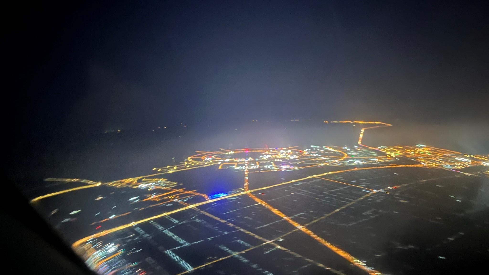
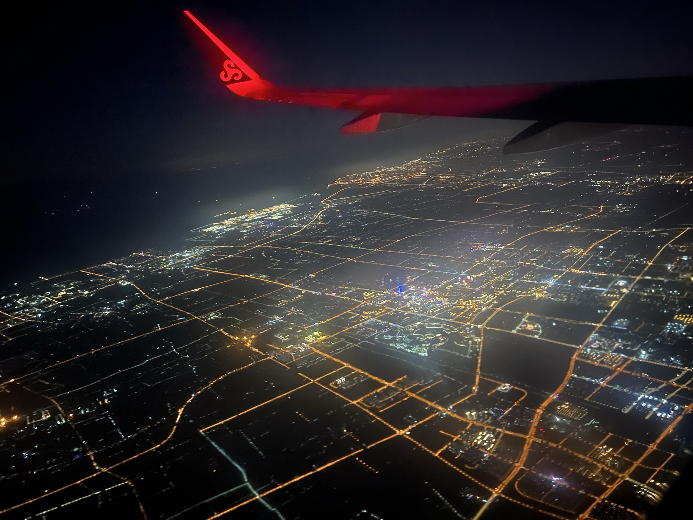
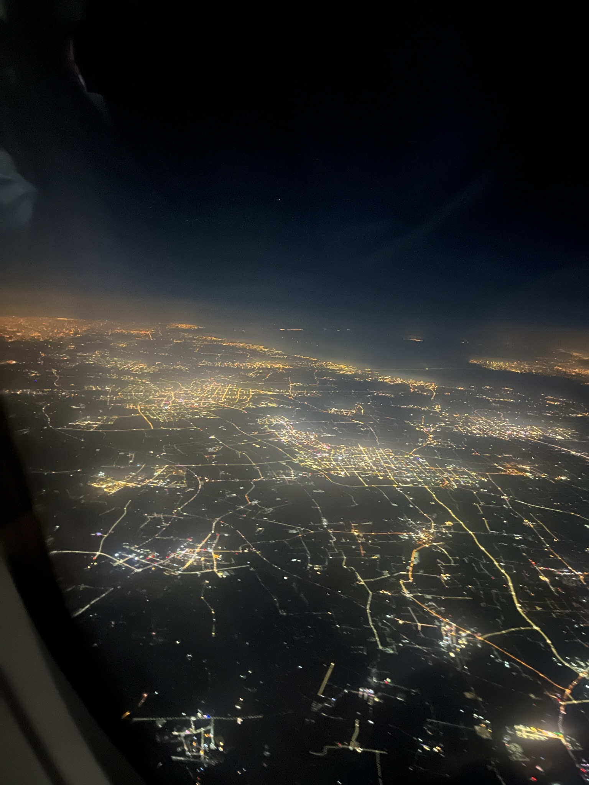
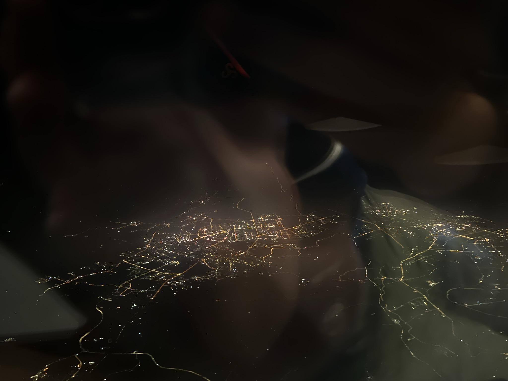
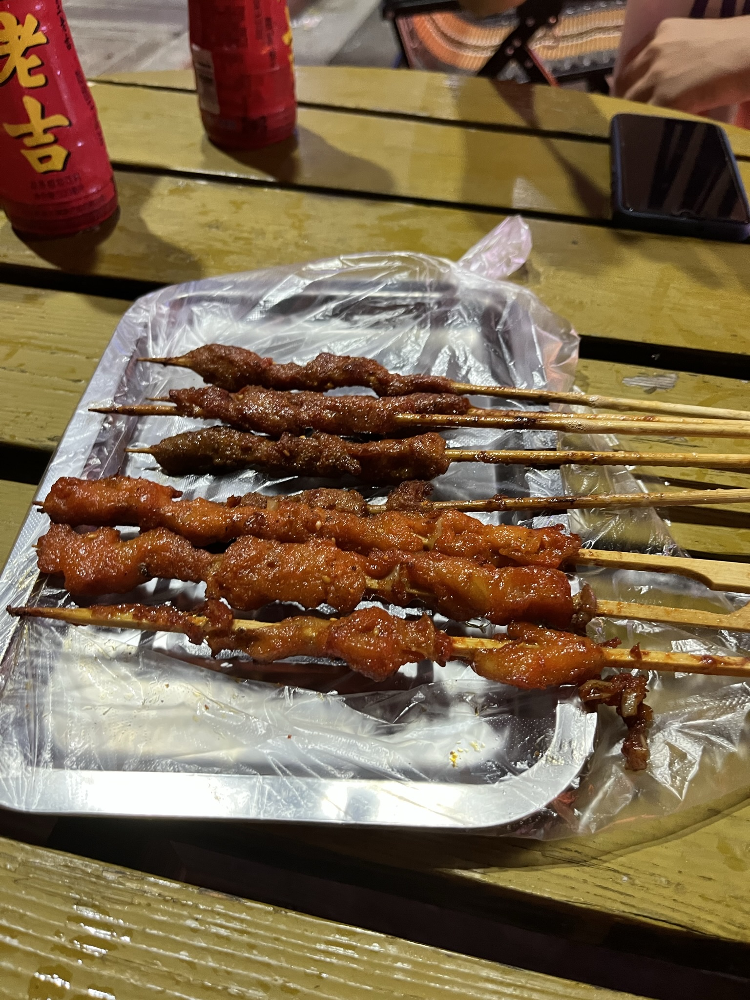

航拍世界1
本次航班由春秋航空的9C6135执飞，机型为空客A320-200.计划20:05从上海浦东国际机场（PVG）起飞，22:40在桂林两江国际机场（KWL）降落，实际起飞时间为20:25,实际降落时间为22:30。总里程1389公里。
第一次坐春秋航空的航班，没有想象中的那么差，除了喝水要钱，没有免费行李托运以外，其它服务与其它航空公司毫无差别，最令人惊讶的是：航空公司派了一架机龄1.9年的空客A320-200执行此次任务（真没想到春秋航空竟然也有年龄那么小的飞机，我一直以为春秋的飞机机龄都大于五年）。
这一次航班由北向南起飞，而登机口位于机场最南边，滑行了挺久才到达跑道起点。飞机于17L跑道起飞，起飞后右转，这次选座选在了飞机左侧，有幸可以看见生活了四年的临港夜景。

航班沿着杭州湾北岸一路向西，路过奉贤、闵行还有松江上空，上海夜景尽收眼底。
 
晚上9:50左右，飞机在长沙上空向左转弯，然后向南，沿着湘江，向湘江的上游飞去，湖中的小岛，像橘子洲头，难免有些兴奋，能在国庆当天，在万米高空，鸟瞰此地，颇有“鹰击长空”之感。后经查明，该洲不是橘子洲是巴溪洲。

晚上10:30,航班准时降落在桂林两江国际机场（KWL），在机场迎接我的有我爸我妈还有两个表弟以及美味的烧烤。

评论